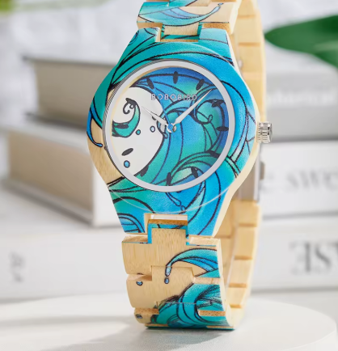
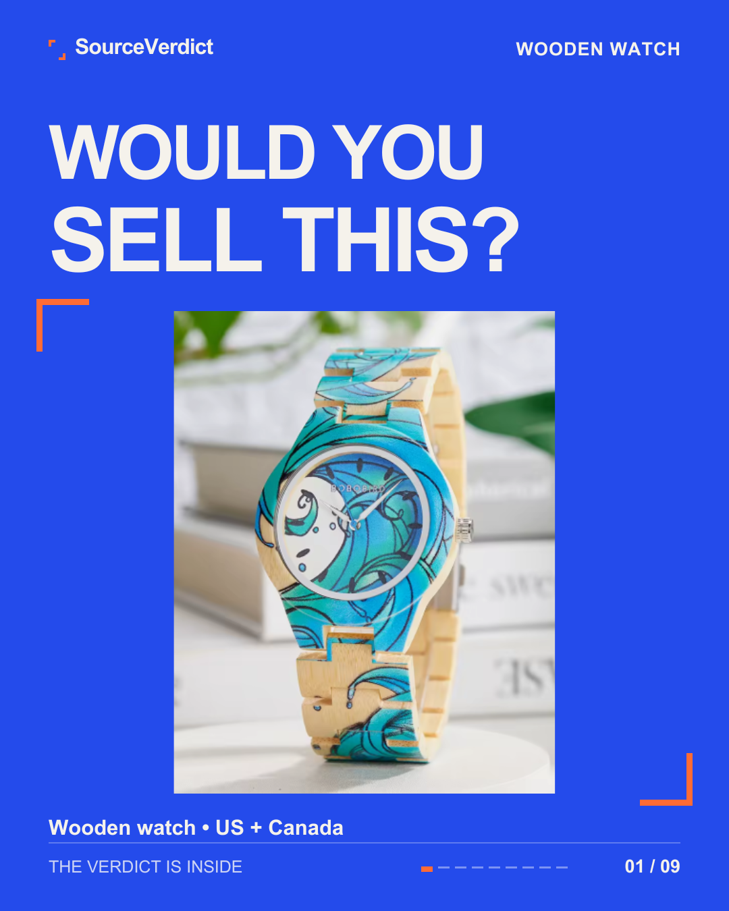
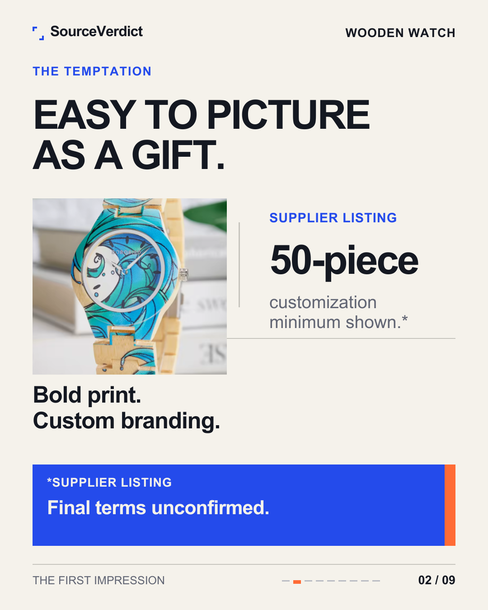
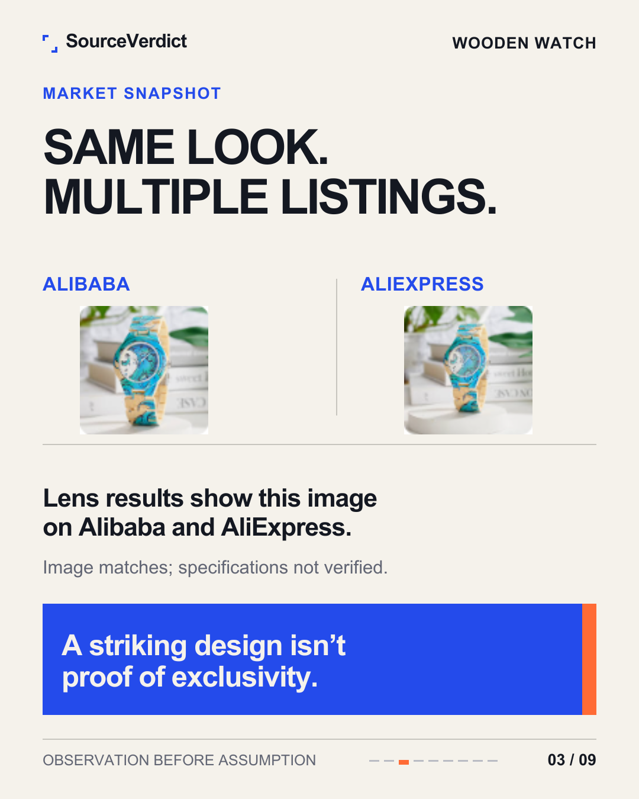
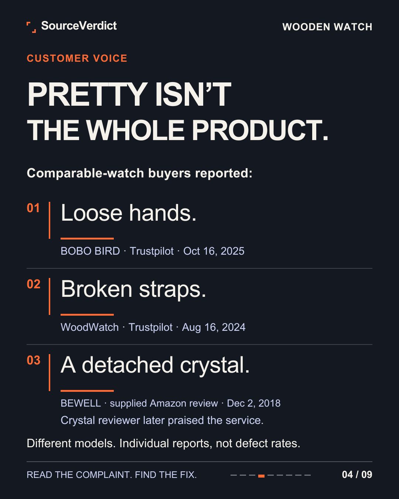
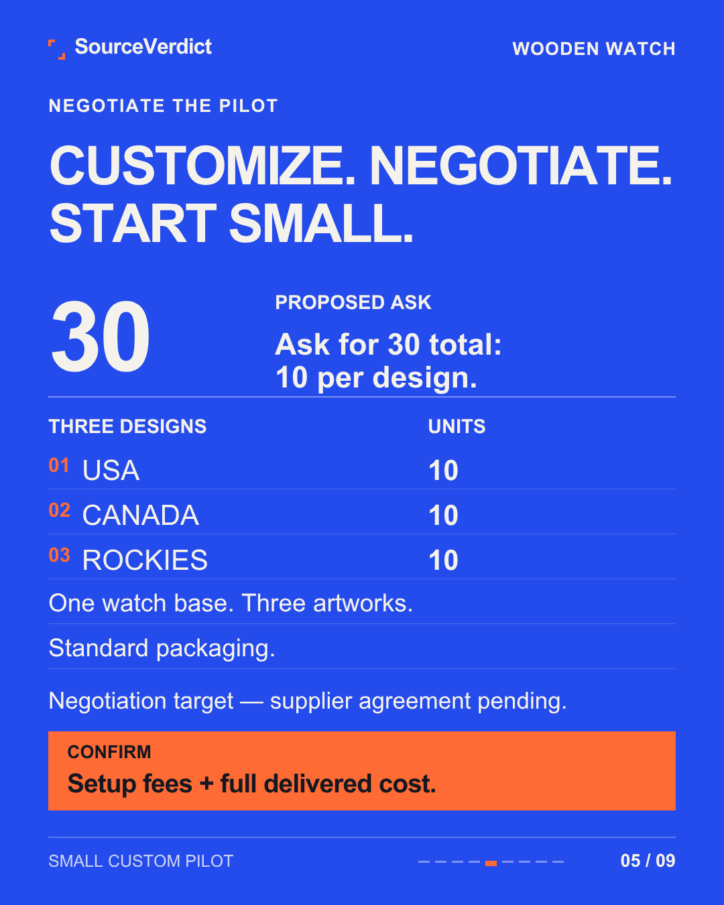
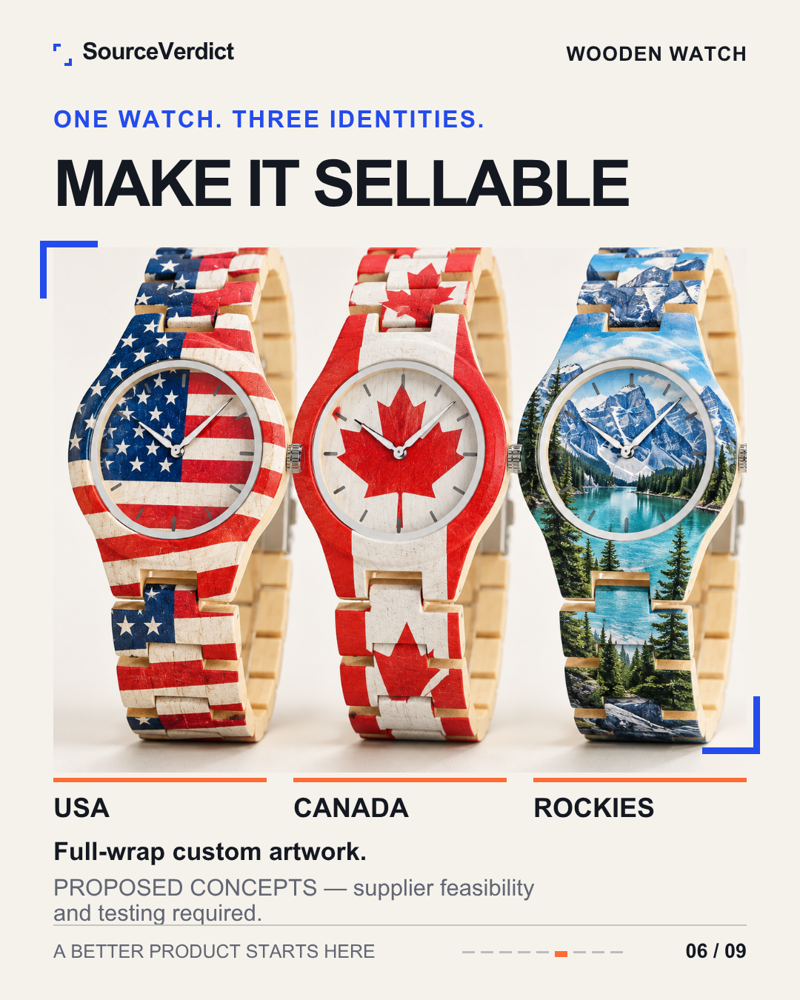
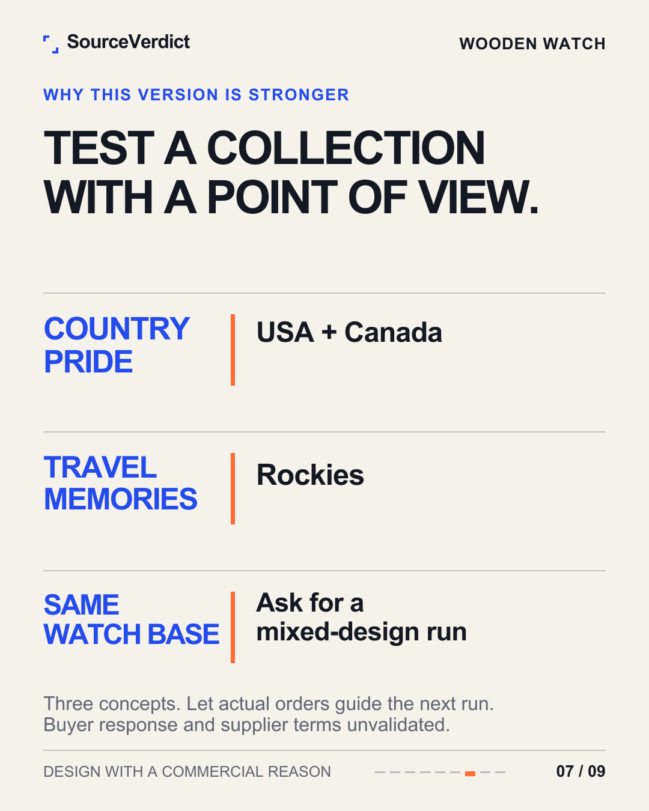
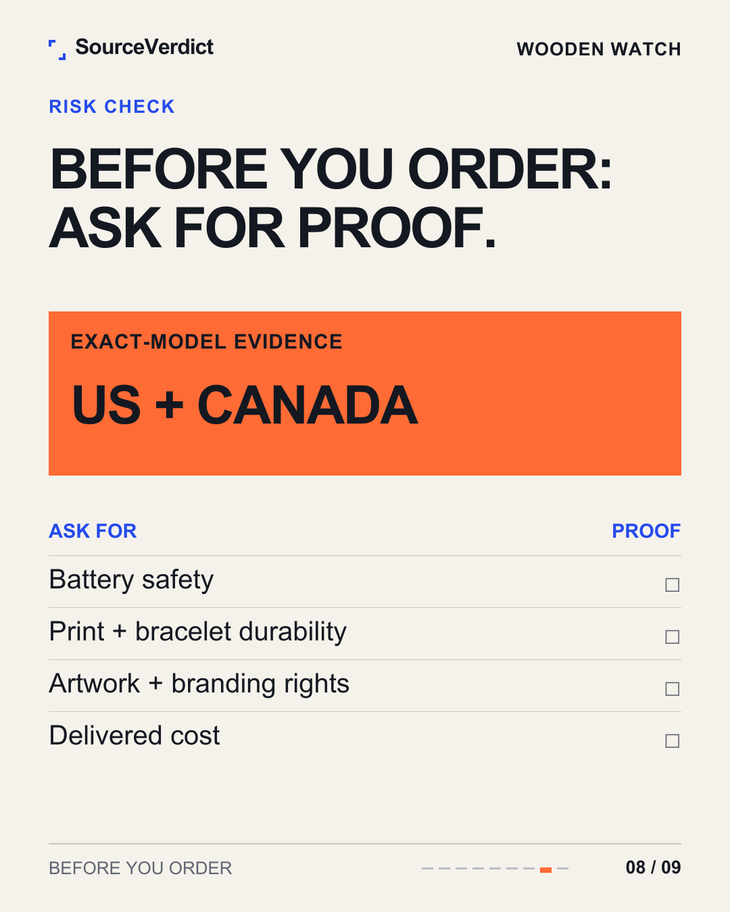
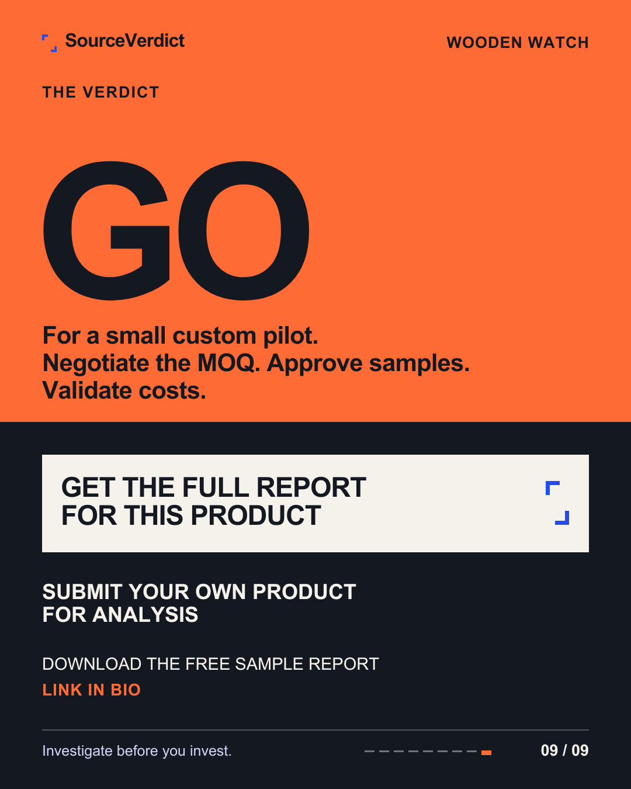

The complete free sample.
A real investigation, start to finish: a printed wooden watch, evaluated for the US and Canadian markets. It shows how we assess a product, interpret customer complaints and explain a possible next step — including its limits. Your investigation will be based on your product, market and budget.

A GO for a pilot is not a GO for inventory. A supported "not yet" is a valid outcome too.
The investigation, page by page.
This example shows our research approach. New full reports also include a structured comparison of launch options (as sourced vs improved) and financial consultation.









A report is a set of answered questions.
Product opportunity
"Is this genuinely comparable to what customers already buy?"
Market & competition
"Is there real demand — or just a lot of listings?"
As sourced vs improved
"Do I sell it as it comes, or improve it first — and what does each cost?"
Unit economics
"After landed cost, fees, ads and returns — is anything left?"
Customer complaints
"What do buyers of similar products actually hate?"
Supplier & negotiation
"Who can supply it, and how do I discuss price and a small first order?"
Financial consultation
"What will it cost to start, and what financing fits my stage?"
Risk & compliance
"What could stop this — safety, batteries, IP, documents?"
The next step
"What's the smallest useful test — and the reasoning behind it?"
Your product, next.
Get an investigation of your own — a Custom Product Screen or a Full Product Launch Report.